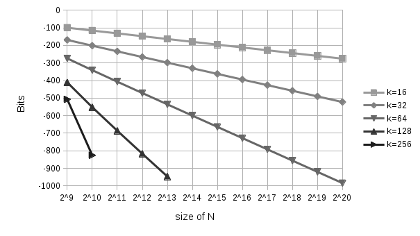

LXR - cryptographic data archive

Complexity
posted on July 19, 2017
Growth of complexity
In the settings of LXR we can choose between 16 and 256 slices per encryption buffer. This is equivalent to a memory of 4 MB to 64 MB.
Now, assuming we have already encrypted 1 GB of data. This has resulted in 4096 (or 212) slices or extracted files on disk (this is the value of N in the graphics below). If one would select k=16 slices from these 4096 in the correct order, then one would need to test 2150 combinations, also written as 1’000’000’000’000’000’000’000’000’000’000’000’000’000’000’000.
This number grows quickly as we require more slices to form a larger buffer, as can be seen from the graphics below.
